La calligraphie islamique n'est pas une décoration : c'est un savoir. La lettre porte le sens, la forme enseigne. Cette page transmet d'abord ce qu'il faut comprendre pour lire une œuvre — le reste vient après.
Le savoir se donne
Pourquoi la lettre est devenue un art
Dans l'islam, le Coran est Parole révélée. Écrire cette Parole engage donc une responsabilité : la forme doit être à la hauteur de ce qu'elle porte. C'est de cette exigence qu'est née la calligraphie arabe — non d'un goût pour l'ornement, mais d'un respect du texte.
Peu à peu, l'écriture est devenue une discipline transmise de maître à élève, avec ses règles de proportion, ses instruments et son ijāza — l'autorisation d'enseigner accordée par le maître à l'élève accompli. Cette chaîne de transmission est vivante depuis plus de mille ans.
L'UNESCO a inscrit la calligraphie arabe au patrimoine culturel immatériel de l'humanité en 2021, sur un dossier porté par seize pays — dont l'Algérie.
Le système des proportions
La calligraphie arabe classique ne se trace pas à l'œil. Elle repose sur une unité de mesure : le point rhomboïdal — la marque losangée laissée par le calame posé une fois sur le papier. Sa taille dépend de la largeur du calame taillé.
À partir de ce point, tout se mesure. L'alif vaut un nombre déterminé de points selon le style — sept en naskh, davantage en thuluth. Le cercle imaginaire dont l'alif est le diamètre gouverne ensuite la courbure des autres lettres.
Ce système, codifié par Ibn Muqla (mort en 940) puis affiné par Ibn al-Bawwāb et Yāqūt al-Mustaʿṣimī, fait que deux calligraphes séparés par des siècles peuvent tracer la même lettre avec les mêmes proportions.
C'est ce qui distingue la calligraphie du simple dessin de lettres : elle est mesurable, enseignable, vérifiable.
Reconnaître les grands styles
Chaque style a son usage et son caractère. Savoir les distinguer, c'est déjà lire une œuvre autrement.
ك
Kūfī الكوفيLe plus ancien. Anguleux, architectural, construit à l'équerre. C'est le style des premiers manuscrits coraniques et des inscriptions monumentales sur les mosquées. Sa force est la solennité.
ن
Naskh النسخLe style de la copie et de la lecture. Lisible, régulier, économe. C'est en naskh que sont imprimés la plupart des Corans aujourd'hui. Sa qualité est la clarté.
ث
Thuluth الثلثLe style majestueux, aux hampes élancées et aux courbes amples. Réservé aux titres, aux frises et aux compositions ornementales. On l'a appelé « la mère des calligraphies » : maîtriser le thuluth, c'est maîtriser l'art.
د
Dīwānī الديوانيNé dans les chancelleries ottomanes. Lettres liées, lignes montantes, densité serrée — il était difficile à falsifier, ce qui convenait aux documents officiels.
ر
Ruqʿa الرقعةLe style de l'écriture quotidienne dans le monde arabe. Court, rapide, sans fioriture. C'est celui qu'on apprend en premier pour écrire vite et bien.
Pour apprendre à tracer les lettres vous-même, la section Langue Arabe de la bibliothèque propose un parcours en trois niveaux avec un agent dédié.
La collection — les Noms divins
Treize Noms composés à ce jour, sur les quatre-vingt-dix-neuf. Chaque planche porte son numéro dans la série.
Sous chaque œuvre : le verset qui fonde le Nom, le hadith qui l'éclaire, son sens d'après Sharḥ Asmāʾ Allāh al-Ḥusnā d'al-Qaḥṭānī, et le fruit de sa contemplation. C'est cela, l'éducation par l'art — l'œuvre ne se regarde pas seulement, elle se lit.
Un rappel nécessaire. La contemplation des Noms est une adoration : elle se fait avec ce qui est établi dans le Coran et la Sunna, sans excès ni innovation. Ces textes sont donnés pour instruire, non pour être récités comme une formule.
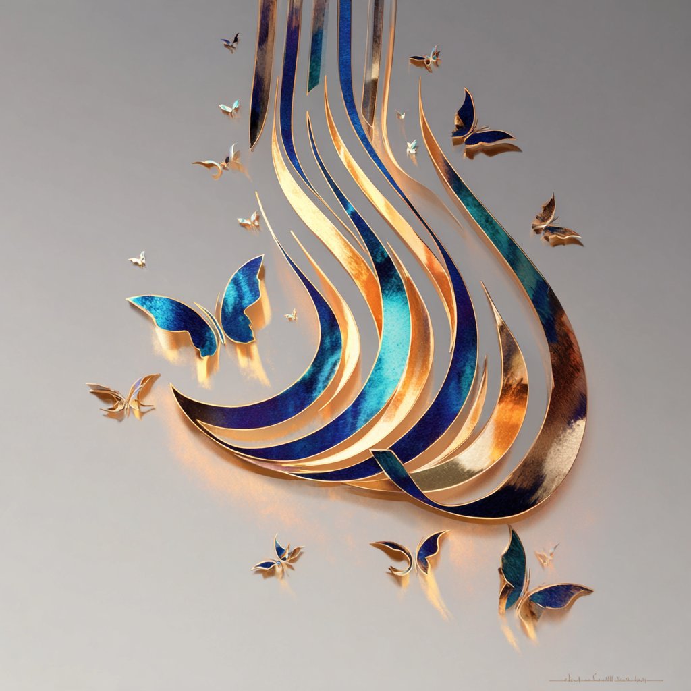
01 / 99
Allah
اللَّه
Le Nom Divin Suprême — L'Être Qui Mérite l'Adoration
قُلْ هُوَ اللَّهُ أَحَدٌ
« Dis : Il est Allah, Unique »
Sourate Al-Ikhlas (112), verset 1
« Les noms les plus aimés d'Allah auprès de Lui sont 'Abdullah et 'Abdurrahman. »
Muslim, n° 2132
Le sens
Allah est le Grand Nom (Al-Ism Al-A'zam), source de tous les 99 Noms. Il désigne l'Être divin qui seul mérite l'adoration absolue. Al-Qahtânî précise qu'il est le plus englobant des Noms : il réunit tous les attributs de perfection, de majesté et de beauté.
Le fruit de la contemplation
Répéter ce Nom avec présence du cœur ouvre les portes de la connaissance divine et clarifie le cœur dans la contemplation.
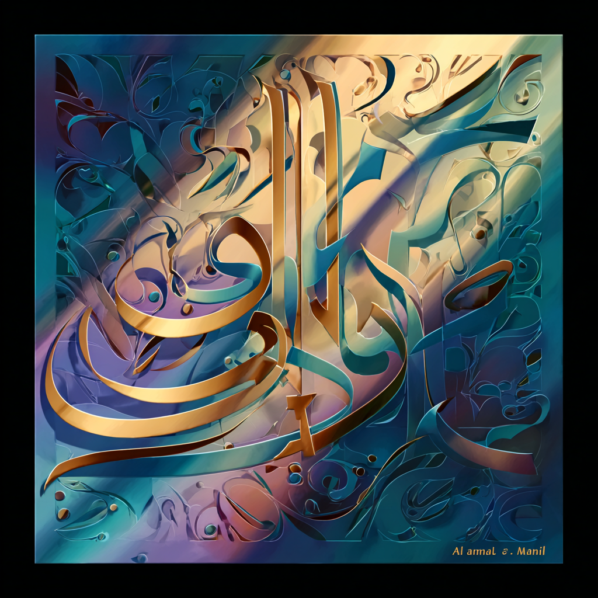
02 / 99
Ar-Rahmân
الرَّحْمَٰن
Le Tout-Miséricordieux — La Miséricorde universelle
قُلِ ادْعُوا اللَّهَ أَوِ ادْعُوا الرَّحْمَٰنَ
« Invoquez Allah ou invoquez Ar-Rahmân — Il a les plus beaux Noms. »
Sourate Al-Isra (17), verset 110
« Allah est plus miséricordieux envers Ses serviteurs que cette mère envers son enfant. »
Al-Bukhari, n° 5999
Le sens
Ar-Rahmân est la miséricorde de l'essence divine, s'étendant à toutes les créatures sans distinction. Al-Qahtânî précise que c'est la miséricorde universelle du monde, accordée au croyant comme à l'incroyant.
Le fruit de la contemplation
Contempler cet attribut amène le serviteur à élargir sa miséricorde envers toutes les créatures d'Allah.
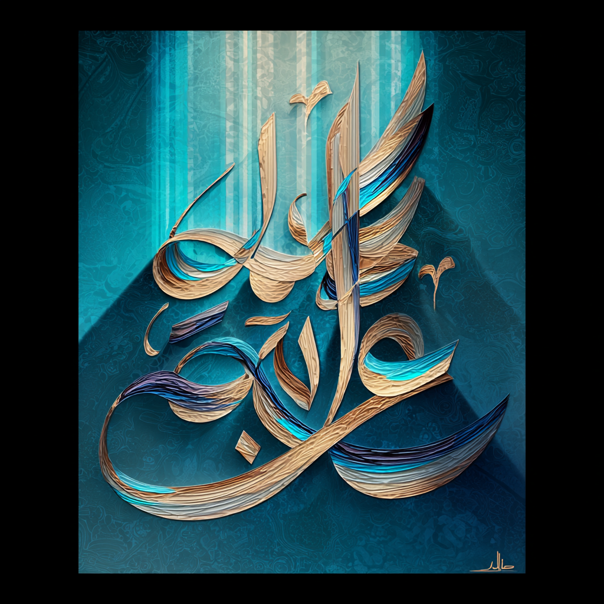
03 / 99
Ar-Rahîm
الرَّحِيم
Le Très-Miséricordieux — Miséricorde particulière aux croyants
إِنَّ اللَّهَ بِالنَّاسِ لَرَءُوفٌ رَّحِيمٌ
« Certes, Allah est pour les gens Plein de bonté, Très Miséricordieux. »
Sourate Al-Baqara (2), verset 143
« Allah a divisé Sa miséricorde en cent parts. Il en a retenu quatre-vingt-dix-neuf et n'en a envoyé qu'une dans ce monde. »
Al-Bukhari, n° 6000
Le sens
Ar-Rahîm est la miséricorde en acte, perpétuelle et ciblée sur les croyants. Al-Qahtânî distingue : Ar-Rahmân est la miséricorde de l'essence (universelle), Ar-Rahîm est la miséricorde de l'action (spéciale aux croyants).
Le fruit de la contemplation
S'accrocher à cet attribut dans la supplication renforce l'espérance du pardon divin.
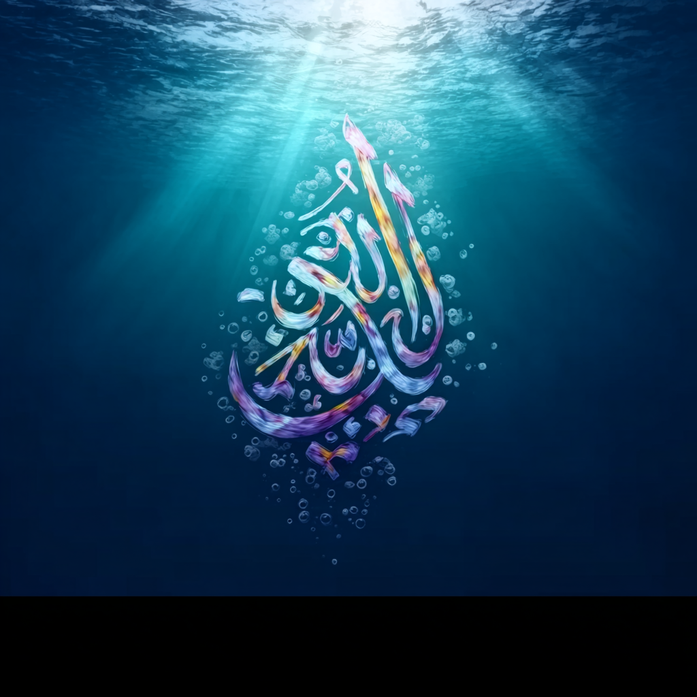
04 / 99
Al-Malik
الْمَلِك
Le Souverain Absolu — Le Roi parfait de toute chose
« Le pire des noms auprès d'Allah sera celui d'un homme qui se sera appelé Roi des rois. »
Al-Bukhari, n° 6206
Le sens
Al-Malik est le Souverain parfait dont la royauté ne dépend de personne. Al-Qahtânî précise que contrairement aux rois créés, la royauté d'Allah est absolue, éternelle et sans limite.
Le fruit de la contemplation
Méditer sur cet attribut libère le cœur de la servitude envers les créatures.
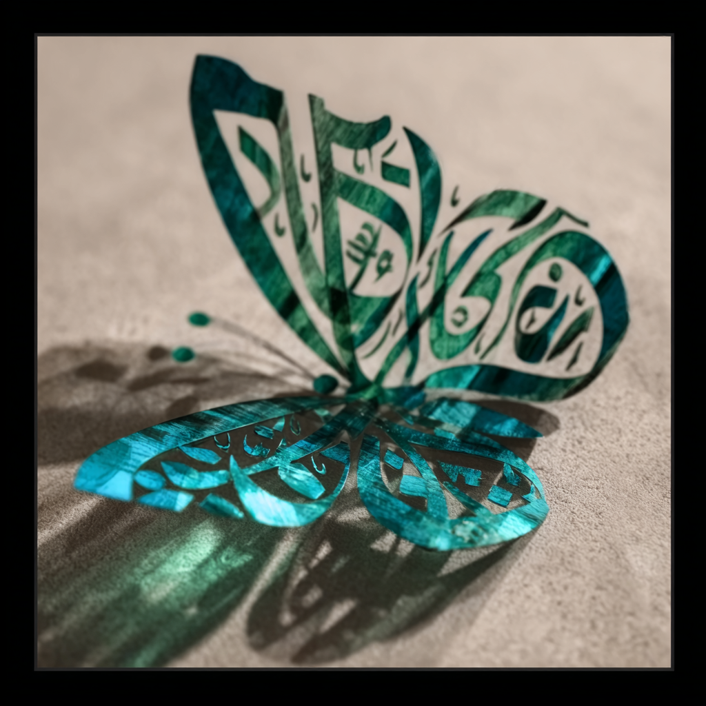
05 / 99
Al-Quddûs
الْقُدُّوس
Le Très-Saint — Absolument pur de toute imperfection
« Il est Allah — le Souverain, le Très-Saint, la Source de Paix. »
Sourate Al-Hashr (59), verset 23
« سُبُّوحٌ قُدُّوسٌ رَبُّ الْمَلَائِكَةِ وَالرُّوحِ » — dit dans la prière nocturne.
Muslim, n° 487
Le sens
Al-Quddûs signifie Celui qui est absolument pur, exempt de toute imperfection et de toute similitude avec Ses créatures. Al-Qahtânî précise qu'Il transcende toute comparaison : Sa sainteté est infinie et incomparable.
Le fruit de la contemplation
Invoquer Al-Quddûs purifie le cœur et rappelle au serviteur de s'élever au-dessus des bassesses.
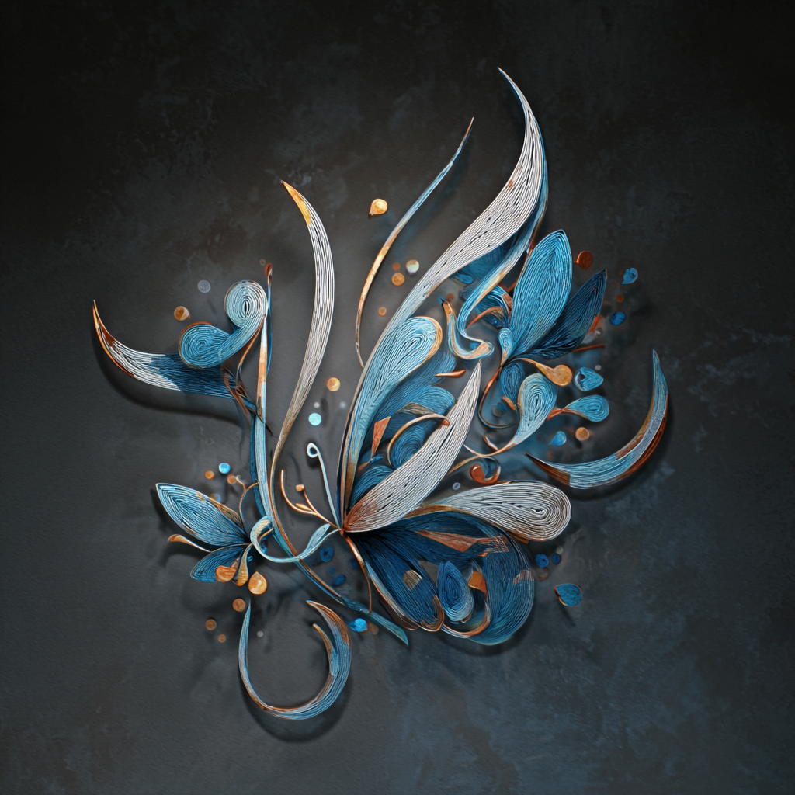
06 / 99
As-Salâm
السَّلَام
La Source de Paix — Exempt de tout défaut et de toute fin
الْمَلِكُ الْقُدُّوسُ السَّلَامُ الْمُؤْمِنُ
« Le Souverain, le Très-Saint, la Source de Paix, le Donneur de Sécurité. »
Sourate Al-Hashr (59), verset 23
« Ô Allah, Tu es As-Salâm, et de Toi vient la paix ; Tu es béni, Possesseur de la majesté et de la générosité. »
Muslim, n° 591 — après la prière
Le sens
As-Salâm est Celui dont l'essence est exempte de tout défaut et de toute limite. Al-Qahtânî précise qu'Il est la source de toute paix et sécurité. Le Paradis est appelé Dâr As-Salâm (Demeure de la Paix).
Le fruit de la contemplation
Contempler As-Salâm apporte la sérénité intérieure et libère le cœur des angoisses du monde.
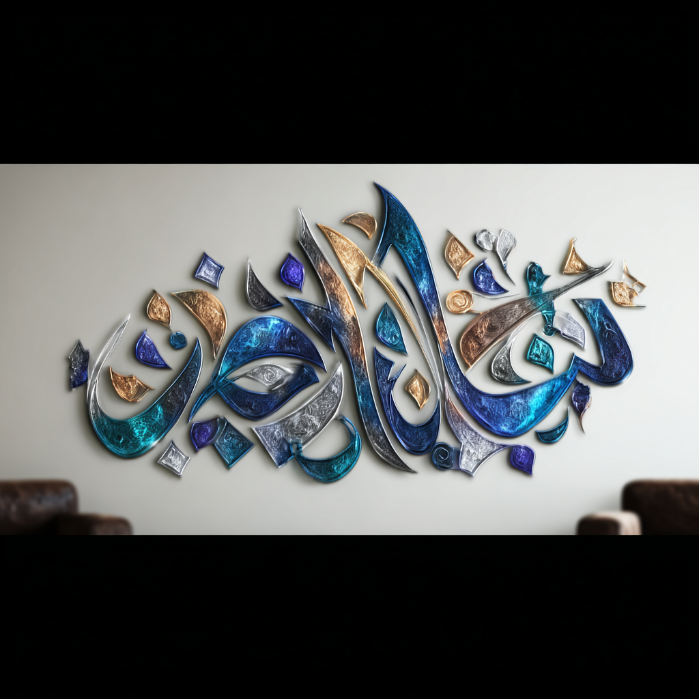
07 / 99
Al-Muʾmin
المُؤْمِن
Le Garant de la Sécurité — Celui qui atteste la vérité et rassure les cœurs
« C'est Lui, Allah. Nulle divinité autre que Lui, le Souverain, le Très-Saint, la Paix, Celui qui donne la sécurité, le Gardien »
Sourate Al-Hashr (59), verset 23
« Le musulman est celui dont les musulmans sont à l'abri de la langue et de la main. »
Al-Bukhari, n° 10
Le sens
Al-Muʾmin porte deux sens indissociables. Il est Celui qui atteste la véracité de Ses messagers et confirme Sa propre parole par les signes qu'Il envoie. Il est aussi Celui qui accorde la sécurité à Ses serviteurs — la sécurité du croyant contre le châtiment, et la sérénité du cœur contre la peur. Al-Qahtânî souligne que la racine ءمن réunit la foi et la sûreté : croire en Allah, c'est être mis à l'abri.
Le fruit de la contemplation
Contempler ce Nom apaise la crainte et enracine la confiance : celui qui sait de qui vient la sécurité cesse de la chercher où elle n'est pas.
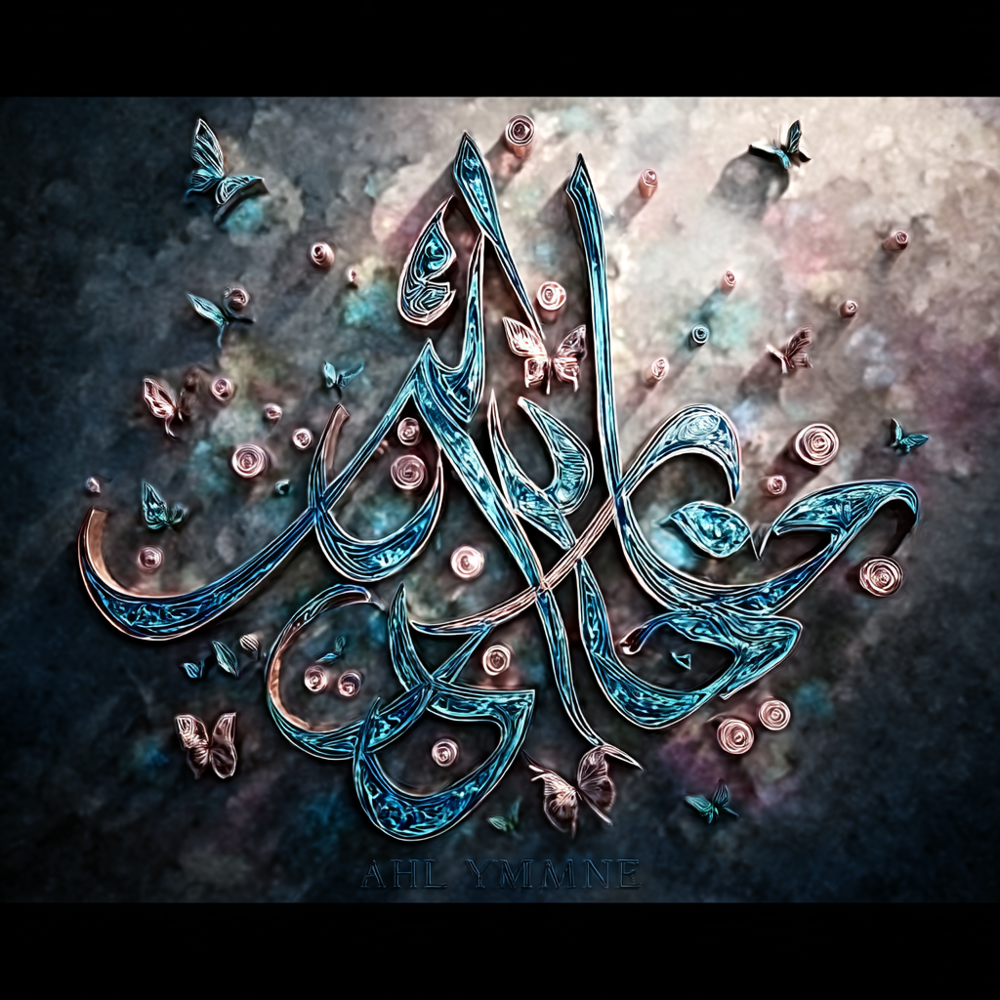
08 / 99
Al-Muhaymin
الْمُهَيْمِن
Le Gardien Suprême — Le Veilleur sur toute chose
الْمُؤْمِنُ الْمُهَيْمِنُ الْعَزِيزُ الْجَبَّارُ
« Le Donneur de Sécurité, le Gardien, le Tout-Puissant, le Contraignant. »
Sourate Al-Hashr (59), verset 23
« Rien n'est caché à Allah, ni dans les cieux ni sur la terre. »
Sourate Ibrahim (14), verset 38
Le sens
Al-Muhaymin est Celui qui surveille, préserve et protège toutes choses dans leurs états. Al-Qahtânî : Il est le Témoin de toutes choses, le Conservateur de tout ce qui se passe dans l'univers — rien ne Lui échappe, ni acte, ni parole, ni pensée.
Le fruit de la contemplation
Savoir qu'Al-Muhaymin veille incite à la vigilance spirituelle et à la rectitude en tout état.
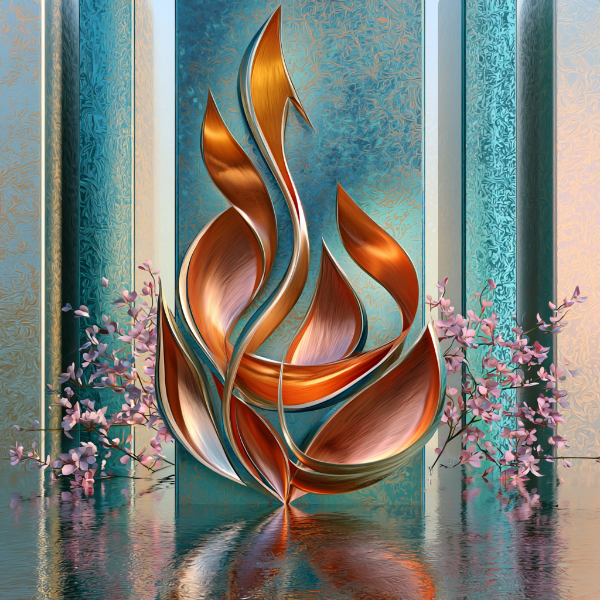
09 / 99
Ash-Shahîd
الشَّهِيد
Le Témoin — Qui voit et entend tout en tout lieu
وَاللَّهُ عَلَىٰ كُلِّ شَيْءٍ شَهِيدٌ
« Et Allah est Témoin de toute chose. »
Sourate Al-Buruj (85), verset 9
« Prends garde à Allah où que tu sois. Suis la mauvaise action par une bonne qui l'effacera. »
Tirmidhi, n° 1987
Le sens
Ash-Shahîd est Celui qui est présent, voyant et entendant en tout lieu et à tout moment. Al-Qahtânî : Il est le Témoin parfait dont le témoignage englobe l'intégralité de la création — passé, présent et futur.
Le fruit de la contemplation
Garder à l'esprit la présence d'Ash-Shahîd purifie les intentions et ennoblit chaque acte.
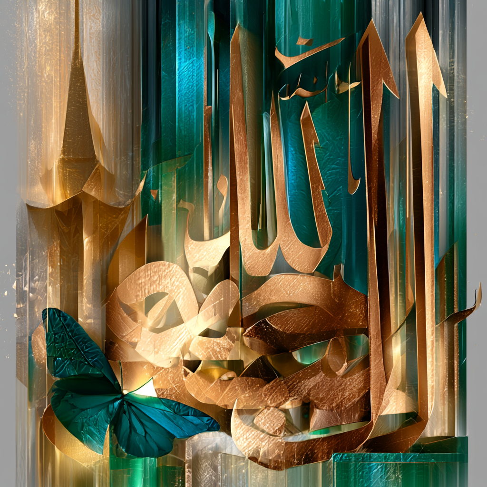
10 / 99
Al-Mutakabbir
المُتَكَبِّر
Le Suprême de grandeur — Celui à qui seul revient l'orgueil
« Le Puissant, Le Contraignant, Le Suprême de grandeur. Gloire à Allah, Il transcende ce qu'ils Lui associent »
Sourate Al-Hashr (59), verset 23
« La grandeur est Mon manteau et la fierté Mon vêtement : quiconque M'en dispute l'un, Je le châtie. »
Muslim, n° 2620 — hadith qudsi
Le sens
Al-Mutakabbir désigne Celui dont la grandeur est absolue et qui transcende toute imperfection. Chez Allah, cet attribut est une perfection ; chez la créature, l'orgueil est un vice, car elle s'attribue ce qui ne lui appartient pas. Al-Qahtânî précise que ce Nom écarte de Lui toute ressemblance avec la création : Il est trop haut pour qu'on Lui associe quoi que ce soit.
Le fruit de la contemplation
Méditer ce Nom brise l'orgueil dans le cœur du serviteur : reconnaître que la grandeur appartient à Allah seul, c'est retrouver sa juste place.
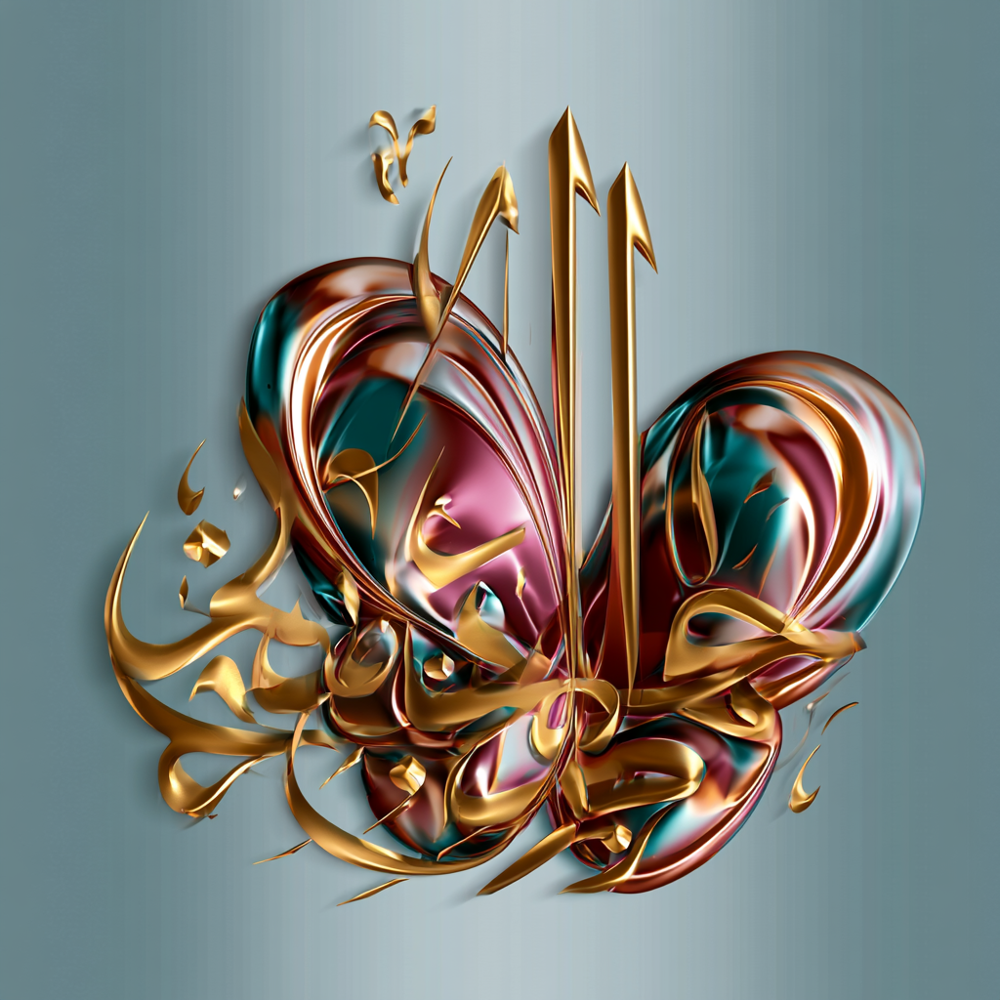
11 / 99
Al-Khâliq
الْخَالِق
Le Créateur — Qui crée de rien et décrète toute chose
« Allah est le Créateur de toute chose et Il est Garant de tout. »
Sourate Az-Zumar (39), verset 62
« Allah a créé la création, puis Il a écrit dans Son Livre : Ma miséricorde précède Ma colère. »
Al-Bukhari, n° 7554
Le sens
Al-Khâliq est Celui qui crée de rien, qui décrète, mesure et planifie toutes choses. Al-Qahtânî : la création divine est unique car elle n'a nul modèle préalable — Il crée par la Parole « Sois ! »
Le fruit de la contemplation
Contempler Al-Khâliq attise l'émerveillement devant l'univers et génère une gratitude profonde pour l'existence.
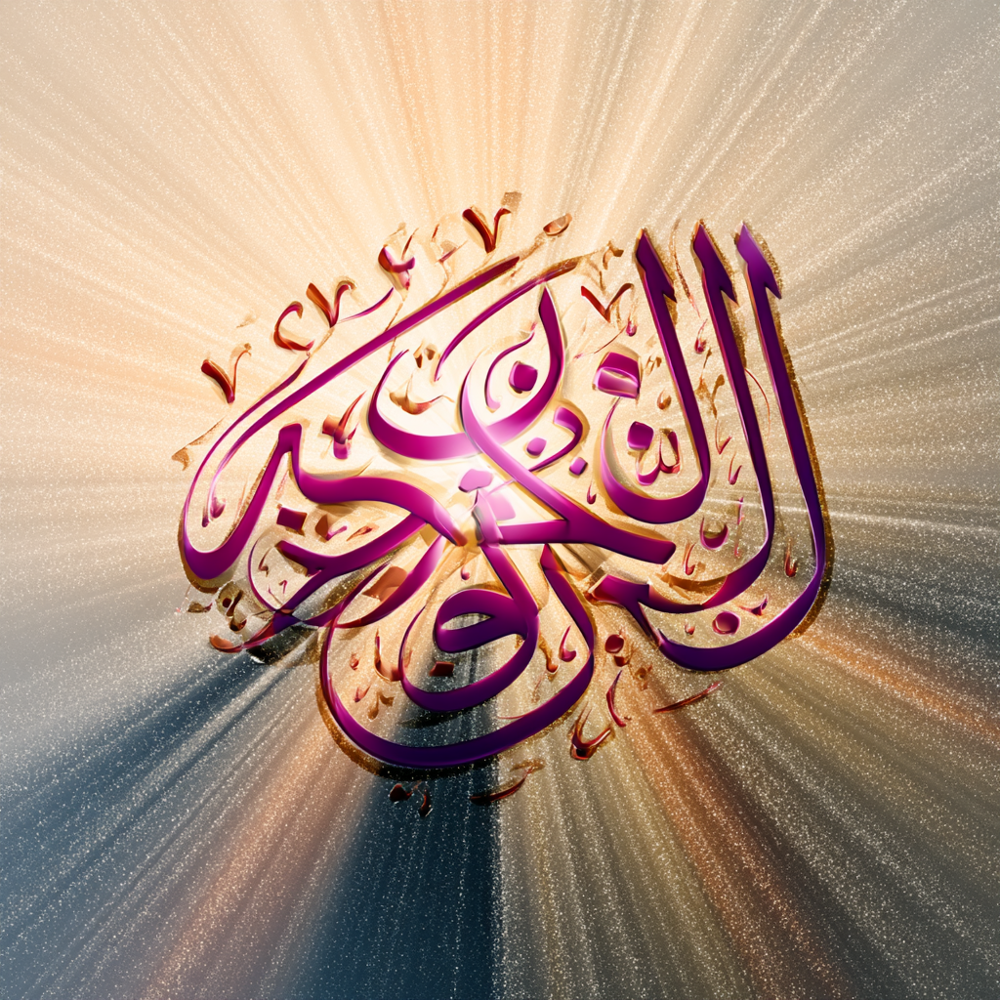
12 / 99
Al-Wadûd
الوَدُود
Le Très Aimant — Celui qui aime et qui est Aimé
وَهُوَ الْغَفُورُ الْوَدُودُ
« Et Il est le Pardonneur, le Très Aimant. »
Sourate Al-Buruj (85), verset 14
« Allah aime et est aimé. Il aime ceux qui se purifient et il aime les bienfaisants. »
Al-Baqara (2:222) — Hadith rapporté par At-Tirmidhi
Le sens
Al-Wadûd est Celui dont l'amour est parfait et éternel. Al-Qahtânî distingue deux dimensions : Allah aime Ses serviteurs croyants d'un amour incomparable, et les serviteurs L'aiment en retour. Cet amour est le moteur de toute adoration sincère.
Le fruit de la contemplation
Méditer sur Al-Wadûd emplit le cœur d'un amour sincère pour Allah et transforme toute action en acte d'amour.
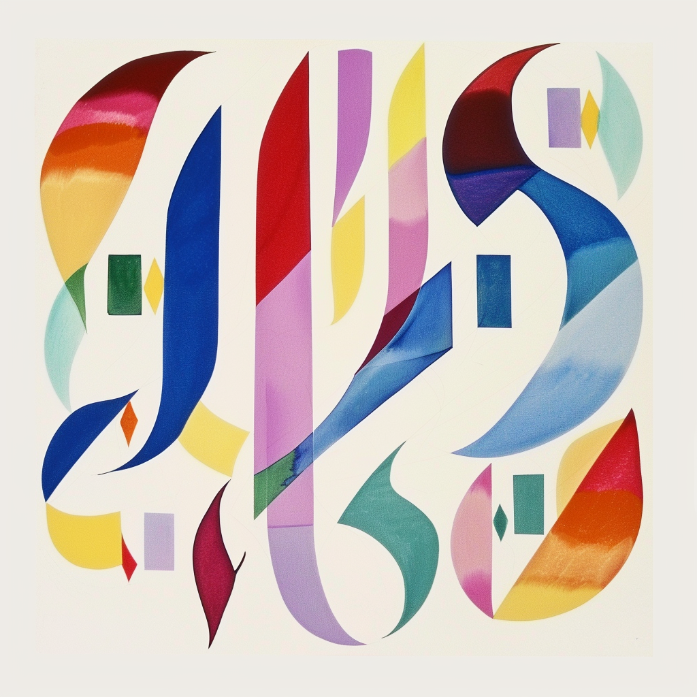
13 / 99
La ilaha illa Allah
لَا إِلَهَ إِلَّا اللَّه
Il n'y a de divinité digne d'adoration qu'Allah — La Shahada
« Sache donc qu'il n'y a pas de divinité en dehors d'Allah et demande pardon pour ton péché. »
Sourate Muhammad (47), verset 19
« Le meilleur dhikr est La ilaha illa Allah. » — « Celui qui dit sincèrement La ilaha illa Allah en entrera au Paradis. »
Tirmidhi, n° 3383 — Bukhari, n° 3435
Le sens
La ilaha illa Allah est la Parole de la sincérité (Kalimat al-Ikhlas), le fondement de la foi islamique. Al-Qahtânî : elle comprend une négation (lâ ilaha) et une affirmation (illa Allah). C'est la clé du Paradis.
Le fruit de la contemplation
Répéter sincèrement la Shahada renouvelle la foi, purifie le cœur et constitue le meilleur des dhikrs.
Si ce travail vous a servi
Cette page restera libre, sans compte ni paiement — le savoir ne se vend pas. Ce qui se vend, c'est l'œuvre : les toiles de la série limitée 1/99, avec leur certificat trilingue.